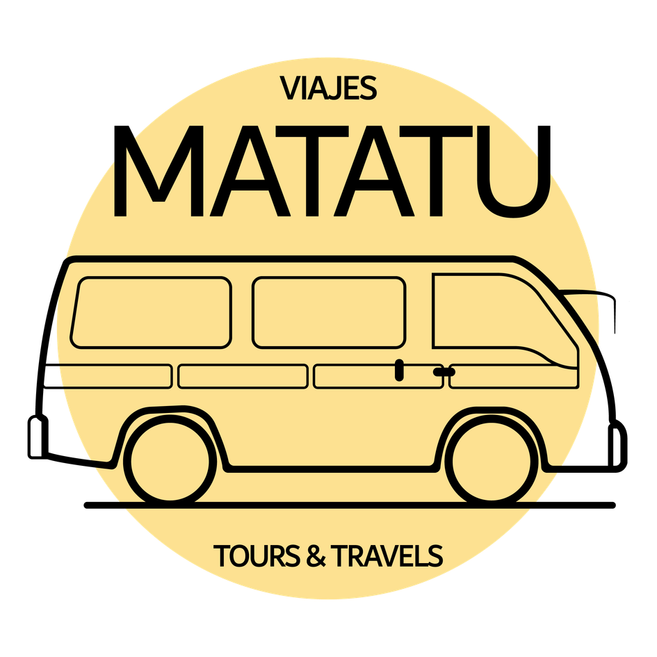
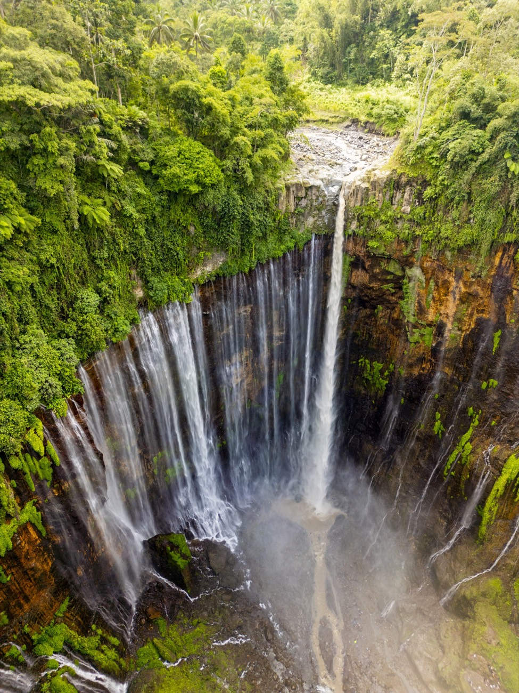
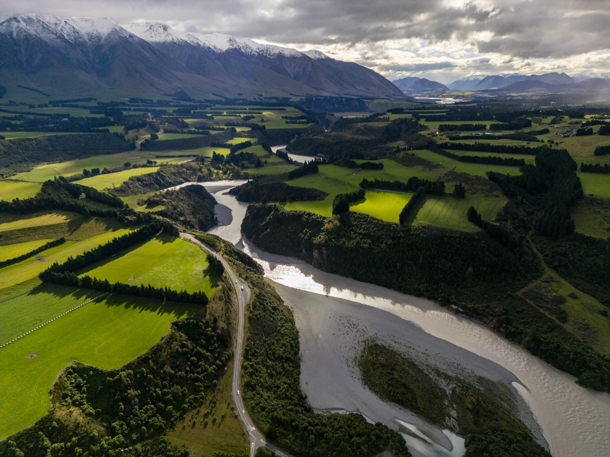
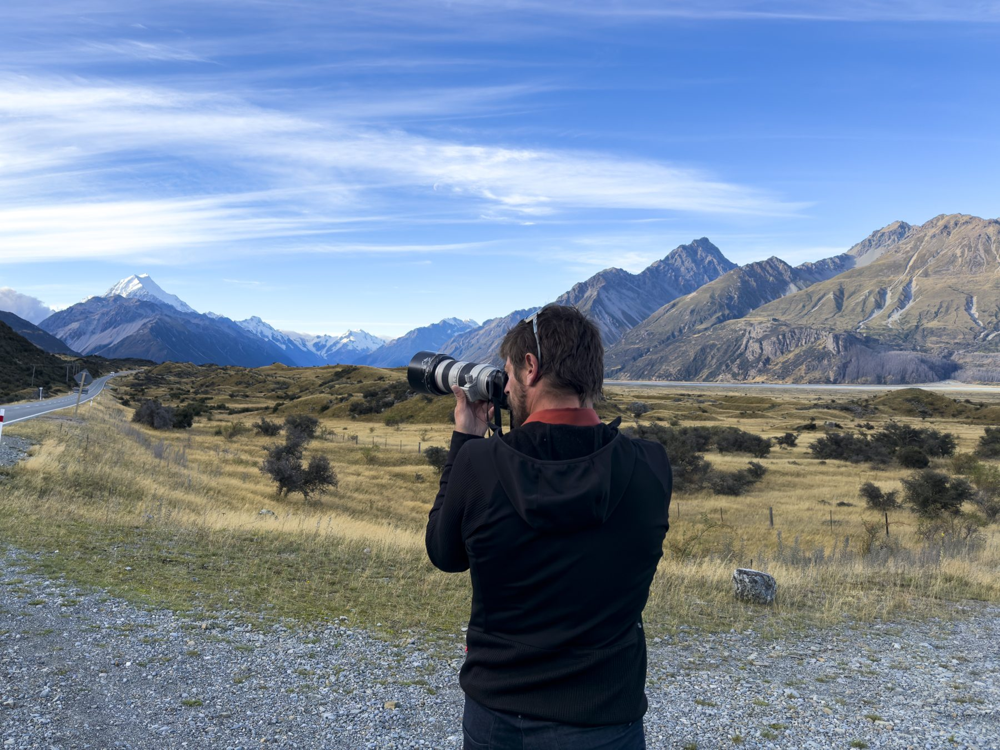

Enseñar lo que se vive
Seguir una ruta como Safari Matatu: paisajes, desplazamientos, alojamientos, encuentros y momentos que ayuden a imaginar la experiencia completa.

Una propuesta de Juan AizpuruFotografía y vídeo creados sobre el terreno para mostrar los viajes de Matatu, vuestro equipo y las personas que dan vida a cada ruta.
Descubrir la propuesta
Fotografía de archivo · creada fuera de UgandaLa oportunidad
Conocéis Uganda desde dentro. Diseñáis viajes a medida, trabajáis con profesionales locales y compartís una forma de viajar que va más allá del safari.
Mi propuesta es construir con vosotros un lenguaje visual reconocible: imágenes que ayuden a un futuro viajero a entender cómo es viajar con Matatu y a confiar en quienes estarán a su lado.
Desarrollo visual de marca
Una producción diseñada alrededor de vuestros viajes y de las piezas que realmente necesitáis para comunicar.
Seguir una ruta como Safari Matatu: paisajes, desplazamientos, alojamientos, encuentros y momentos que ayuden a imaginar la experiencia completa.
Retratar a vuestro equipo, guías, anfitriones y proyectos culturales con tiempo, colaboración local y consentimiento.
Crear un archivo de fotografía y vídeo coherente para web, itinerarios y promoción, o desarrollar con vosotros una campaña completa.

Viajaría para trabajar junto a vuestro equipo y guías locales. Decidiríamos juntos las rutas, las prioridades, el tiempo necesario y la forma de producción.
El proyecto puede adaptarse a una ruta concreta o ampliarse a varias etapas y destinos. Formatos y condiciones de uso se acuerdan según vuestras necesidades; conservo la autoría y propiedad del material.
Fotografía de archivo realizada fuera de Uganda.Mostrar el recorrido completo: el camino, la naturaleza, los alojamientos y la atención de vuestro equipo. Un relato visual que ayude a presentar el viaje en vuestra web y a futuros viajeros.
Estas imágenes son una muestra de mi archivo, creado fuera de Uganda. El material específico para Matatu se produciría en vuestros destinos.


Soy Juan Aizpuru, fotógrafo y realizador. Me gustaría conocer la visión de María y Lawrence, escuchar qué necesitan y estudiar cómo crear imágenes que acompañen el crecimiento de Matatu.
La propuesta está abierta a sus prioridades: renovar el material visual, dar a conocer una ruta concreta o contar mejor el trabajo de su equipo.
Una primera conversación para identificar las rutas, los públicos y las historias que más os gustaría mostrar.
Una conversación para conocer qué tenéis en mente y valorar cómo podríamos colaborar.
Ver mi trabajo